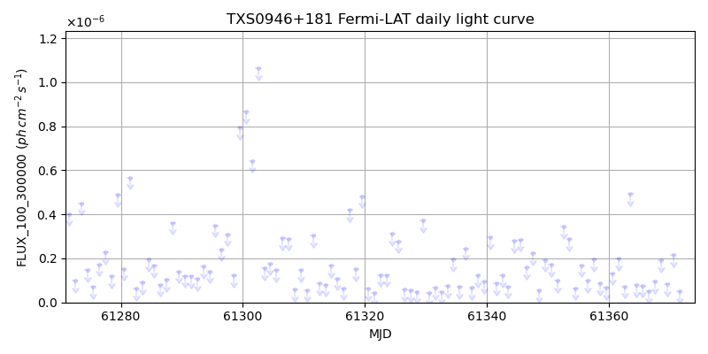
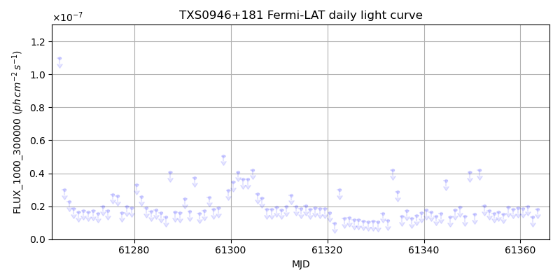

LAT Lightcurve site: https://fermi.gsfc.nasa.gov/ssc/data/access/lat/msl_lc/source/TXS_0946p181
NED: Query
Time of last update of this page: UT: 2026-11-28 16:21 (MJD: 61372.681)
| Property | Value |
|---|---|
| R.A. | 9:49:39.84 |
| Dec. | 17:52:48.0 |
| z | 0.694 |
| 3FGL SpectrumType | |
| 3FGL PL Index | -1.00 |
| 3FGL Flux_100_300000 | -1.00e+00 |
| 3FGL Flux_1000_300000 | -1.00e+00 |
| 3FGL Flux >200 GeV | -1.00e+00 |
| 3FGL Extrap. Crab >200 GeV | -1.00 |
| 3FGL Flux After EBL Absorption >200GeV | -1.00e+00 |
| 3FGL EBL Crab Fraction >200GeV | -1.00 |

| MJD | dMJD | Flux | dFlux | Frac3FGL | FracCrab>200GeV | EBLFracCrab>200GeV |
|---|---|---|---|---|---|---|
| 61367.50 | 0.50 | 9.54e-08 | 0.00e+00 | 0.00 | 0.00 | -0.00 |
| 61368.50 | 0.50 | 1.90e-07 | 0.00e+00 | 0.00 | 0.00 | -0.00 |
| 61369.50 | 0.50 | 8.35e-08 | 0.00e+00 | 0.00 | 0.00 | -0.00 |
| 61370.50 | 0.50 | 2.16e-07 | 0.00e+00 | 0.00 | 0.00 | -0.00 |
| 61371.50 | 0.50 | 5.09e-08 | 0.00e+00 | 0.00 | 0.00 | -0.00 |
| MJD | dMJD | Flux | dFlux | Frac3FGL | FracCrab>200GeV | EBLFracCrab>200GeV |
|---|---|---|---|---|---|---|
| 61335.50 | 3.50 | 1.85e-08 | 0.00e+00 | 0.00 | 0.00 | -0.00 |
| 61342.50 | 3.50 | 1.82e-08 | 0.00e+00 | 0.00 | 0.00 | -0.00 |
| 61349.50 | 3.50 | 4.34e-08 | 0.00e+00 | 0.00 | 0.00 | -0.00 |
| 61356.50 | 3.50 | 4.28e-08 | 0.00e+00 | 0.00 | 0.00 | -0.00 |
| 61363.50 | 3.50 | 2.14e-08 | 0.00e+00 | 0.00 | 0.00 | -0.00 |

| MJD | dMJD | Flux | dFlux | Frac3FGL | FracCrab>200GeV | EBLFracCrab>200GeV |
|---|---|---|---|---|---|---|
| 61367.50 | 0.50 | 2.97e-08 | 0.00e+00 | 0.00 | 0.00 | -0.00 |
| 61368.50 | 0.50 | 1.20e-08 | 0.00e+00 | 0.00 | 0.00 | -0.00 |
| 61369.50 | 0.50 | 1.33e-08 | 0.00e+00 | 0.00 | 0.00 | -0.00 |
| 61370.50 | 0.50 | 2.30e-08 | 0.00e+00 | 0.00 | 0.00 | -0.00 |
| 61371.50 | 0.50 | 1.97e-08 | 0.00e+00 | 0.00 | 0.00 | -0.00 |

| MJD | dMJD | Flux | dFlux | Frac3FGL | FracCrab>200GeV | EBLFracCrab>200GeV |
|---|---|---|---|---|---|---|
| 61335.50 | 3.50 | 2.81e-09 | 0.00e+00 | 0.00 | 0.00 | -0.00 |
| 61342.50 | 3.50 | 2.77e-09 | 0.00e+00 | 0.00 | 0.00 | -0.00 |
| 61349.50 | 3.50 | 3.76e-09 | 0.00e+00 | 0.00 | 0.00 | -0.00 |
| 61356.50 | 3.50 | 2.69e-09 | 0.00e+00 | 0.00 | 0.00 | -0.00 |
| 61363.50 | 3.50 | 2.11e-09 | 0.00e+00 | 0.00 | 0.00 | -0.00 |
--------------------------------------------------------- Using user-supplied coords: 9:49:39.84 17:52:48.0 2000 --------------------------------------------------------- FLWO UT night of: 2026-11-29 Local Sid. @ Midnight: 04:08 Sunset (-15.0) (local, UT): 18:31 01:31 Sunrise (-15.0) (local, UT): 05:53 12:53 Moonrise (local, UT): 21:57 04:57 Moonset (local, UT): Moon phase: 0.72 --------------------------------------------------------- AzTime LSID UT Obj_el Obj_az Mn_el Mn_az Sep. --------------------------------------------------------- 18:31 22:39 01:31 -39.2 14.9 -32.9 32.1 15.3 19:01 23:09 02:01 -37.1 23.6 -29.4 38.9 14.9 19:31 23:39 02:31 -34.2 31.6 -25.4 45.0 14.5 20:01 00:09 03:01 -30.5 38.9 -21.0 50.6 14.2 20:31 00:39 03:31 -26.2 45.4 -16.2 55.6 13.8 21:01 01:09 04:01 -21.4 51.2 -11.1 60.2 13.5 21:31 01:39 04:31 -16.2 56.4 -5.4 64.5 13.2 22:01 02:09 05:01 -10.7 61.2 0.4 68.5 12.9 22:31 02:39 05:31 -4.4 65.5 5.8 72.2 12.6 23:01 03:10 06:01 1.3 69.6 11.6 75.8 12.3 23:31 03:40 06:31 7.1 73.4 17.5 79.4 12.0 00:01 04:10 07:01 13.2 77.1 23.6 82.9 11.8 00:31 04:40 07:31 19.5 80.7 29.7 86.5 11.5 01:01 05:10 08:01 25.8 84.3 35.8 90.3 11.3 01:31 05:40 08:31 32.2 88.0 42.0 94.4 11.1 02:01 06:10 09:01 38.6 91.9 48.1 99.1 10.9 02:31 06:40 09:31 44.9 96.3 54.2 104.7 10.7 03:01 07:10 10:01 51.3 101.3 60.1 111.7 10.5 03:31 07:40 10:31 57.5 107.5 65.6 121.1 10.4 04:01 08:10 11:01 63.4 115.6 70.5 134.7 10.2 04:31 08:40 11:31 68.9 127.1 74.0 154.7 10.0 05:01 09:11 12:01 73.4 144.5 75.2 181.1 9.9 05:31 09:41 12:31 75.9 170.1 73.6 206.8 9.7 05:53 10:02 12:53 75.8 191.4 71.0 221.2 9.6 --------------------------------------------------------- Dark hours >55 deg.: 0.00